図解：近代彫刻
近代彫刻の成立
- 19世紀
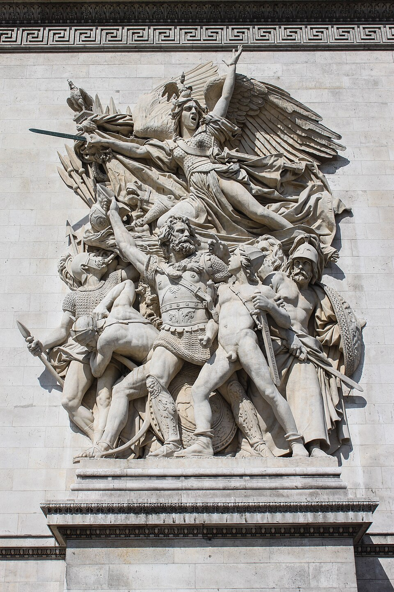
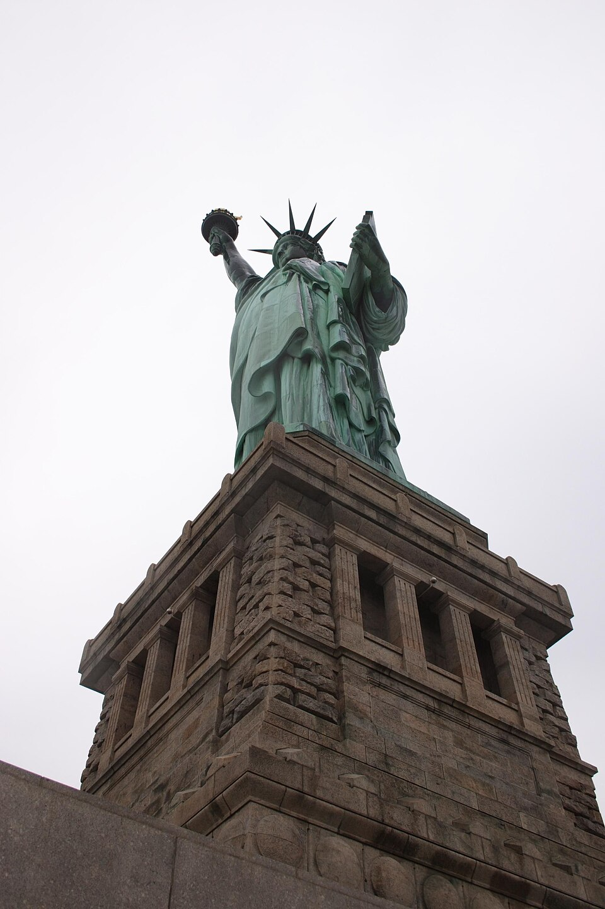
国家が注文する記念碑費用が高く公的事業が頼り
理想化された英雄像 - 自由帝政期
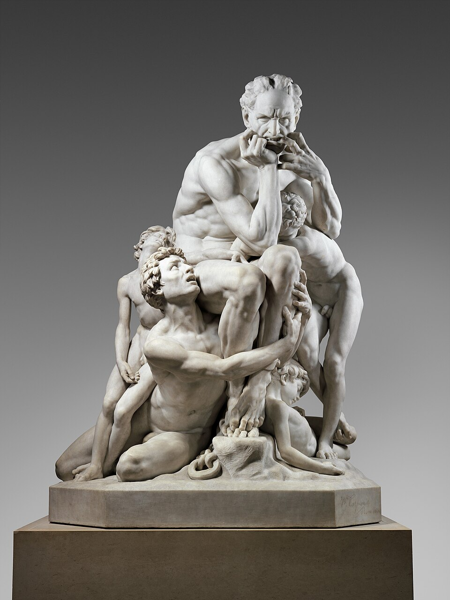
カルポーが苦悩を表す《ウゴリーノと息子たち》
理想的な肉体は残す - 1877〜
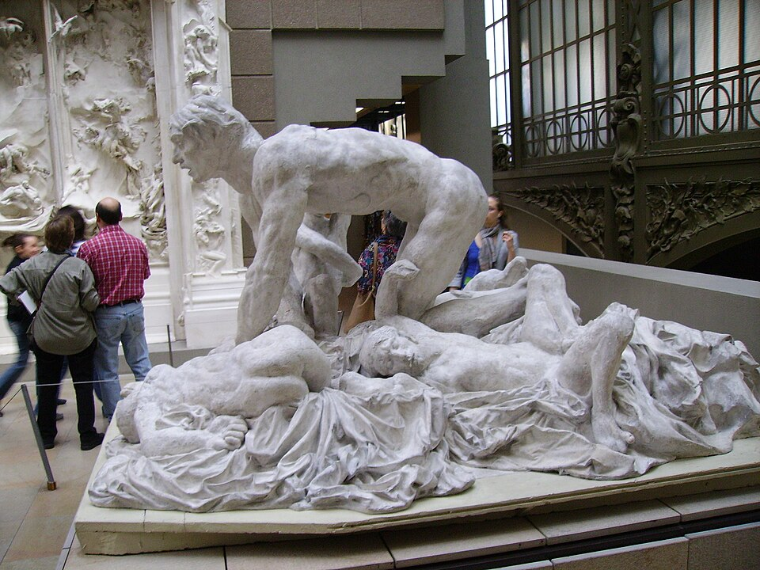
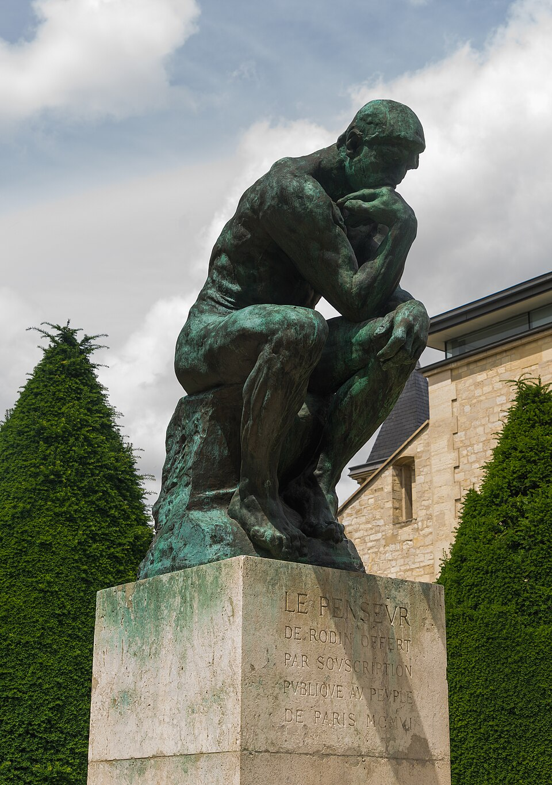
ロダンが常識を覆す《青銅時代》で賛否
敗者や絶望する人間を表す - 1909
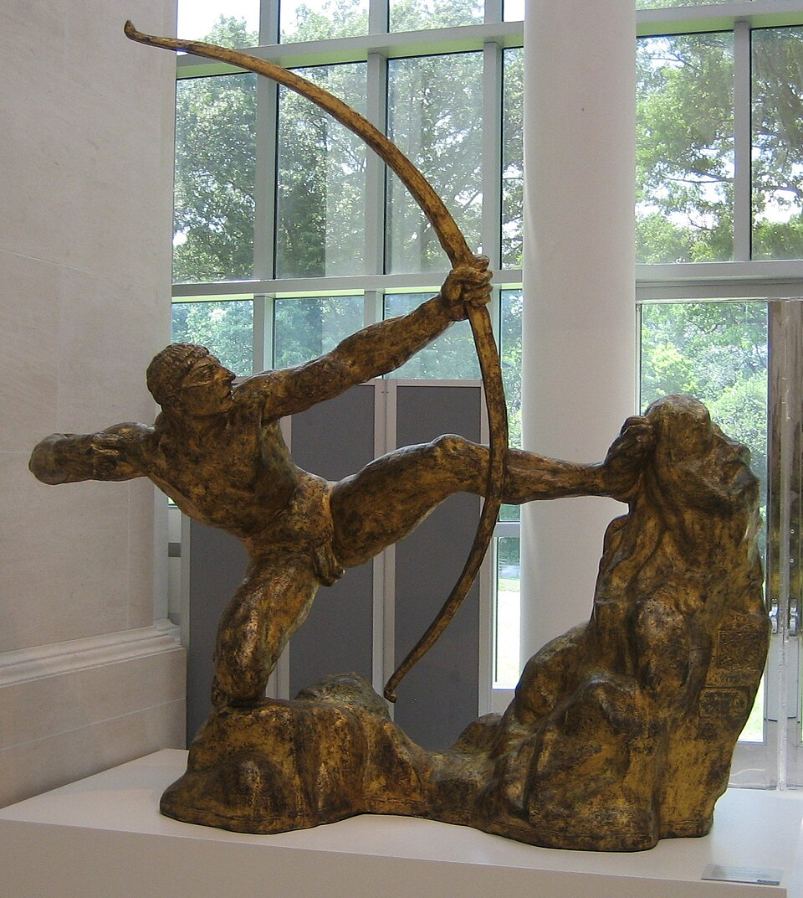
ロダンに続く巨匠ブールデル、マイヨール
20世紀の自己表現へ
従来の彫刻と何が違うか
《青銅時代》の旧題《敗者》肉体理想的な肉体美現実にいそうな体格英雄像堂々とした英雄怯え迷う人々
《カレーの市民》読み方知識があれば分かる誰なのか謎めく
《考える人》
重要人物
英雄像の時代
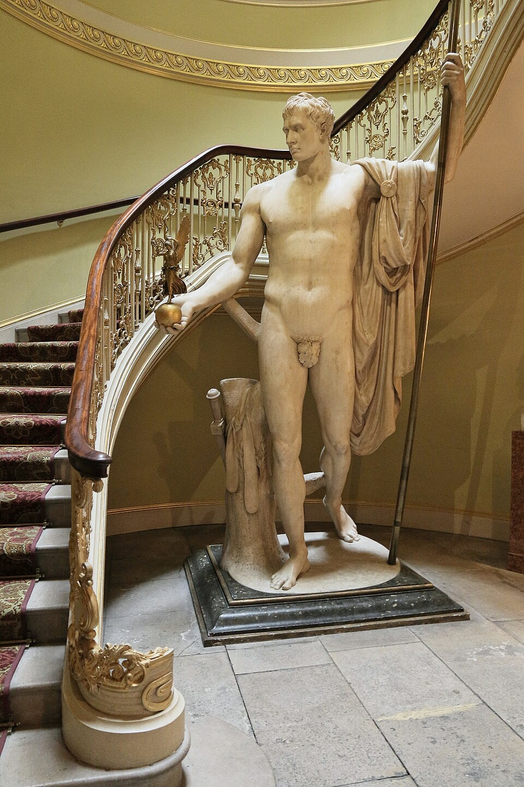
ナポレオン皇帝新古典主義の彫刻で理想化された英雄として表される- フランソワ・リュード彫刻家凱旋門の《1792年の義勇軍の出発》を制作
- ジャン＝バティスト・カルポー彫刻家リュードの弟子。英雄像と異なる人間の苦悩を表す
ロダンと、ロダンが学んだ巨匠

ロダン以後の彫刻家
- アントワーヌ・ブールデル彫刻家ロダンの助手を十五年。《弓をひくヘラクレス》で名を残す
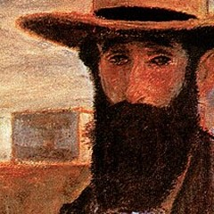
アリスティド・マイヨール彫刻家元は画家。《地中海》など抽象的な概念を女性像で表す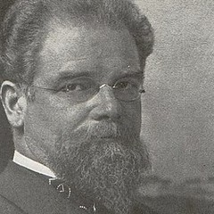
マックス・クリンガー画家・彫刻家象徴主義。《ベートーヴェン像》に色彩を施す ポール・ゴーギャン画家自然から抽象を引き出す教えがマイヨールに影響したと思われる
ポール・ゴーギャン画家自然から抽象を引き出す教えがマイヨールに影響したと思われる
肖像・図版の出典
- 《平和をもたらすマルスとしてのナポレオン》アントニオ・カノーヴァ：出典（CC BY-SA 3.0）
- オーギュスト・ロダンの写真、ナダール撮影、1891年：出典（Public domain）
- 《ミケランジェロの肖像》ダニエーレ・ダ・ヴォルテッラ（帰属）、1544年頃（部分）：出典（Public domain）
- 《アリスティド・マイヨールの肖像》リップル＝ローナイ・ヨージェフ、1899年、オルセー美術館：出典（Public domain）
- マックス・クリンガーの写真、ニコラ・ペルシャイト撮影、1903年頃：出典（Public domain）
- 《黄色いキリストのある自画像》ポール・ゴーギャン、1890～1891年、オルセー美術館：出典（Public domain）
19世紀の彫刻と記念碑
彫刻の変化が緩やかだった理由
動画 1:48～19世紀の絵画は、新古典主義、ロマン主義、レアリスム、印象主義と、既存の価値観や伝統を疑いながら大きく変化しました。それに対し、絵画と双璧をなす彫刻の変化は緩やかでした。一つの理由は、制作費です。17世紀以降の科学の発展は画材や合成塗料の開発を促し、絵画は比較的安価に制作できるようになりました。後ろ盾がなくても、まず好きな絵を描き、その後で買い手を探すことが可能だったのです。
彫刻の素材となる大理石や青銅は高価なままで、気軽に作ってから買い手を探すことは困難でした。粘土像や石膏原型を見せる方法はありますが、19世紀の主なパトロンである中上流階級の市民、ブルジョワ層の収集対象は、絵画や家具が中心でした。材料費も高い彫刻は、収集の優先順位でも後になりがちだったのです。
国家が注文する記念碑
動画 3:05～そのため、彫刻の注文は主に公的な事業からもたらされました。ナポレオンの台頭以後、各国では愛国主義が芽生え、記念碑が多く作られます。エトワール凱旋門の《1792年の義勇軍の出発（ラ・マルセイエーズ）》は、フランス革命を記念する作品です。

《1792年の義勇軍の出発（ラ・マルセイエーズ）》
- 作者
- フランソワ・リュード
- 制作時期
- 1833～1836年
- 所在地・所蔵
- エトワール凱旋門、パリ
- 素材・形式
- 彫刻・記念碑
出典・画像について
ドイツでは普仏戦争後の帝国建国を記念するニーダーヴァルト記念碑、イギリスではヴィクトリア女王の夫アルバート公を記念するアルバート記念碑が作られました。アメリカ独立百周年を記念してフランスから贈られた《世界を照らす自由》、別名《自由の女神像》もよく知られています。

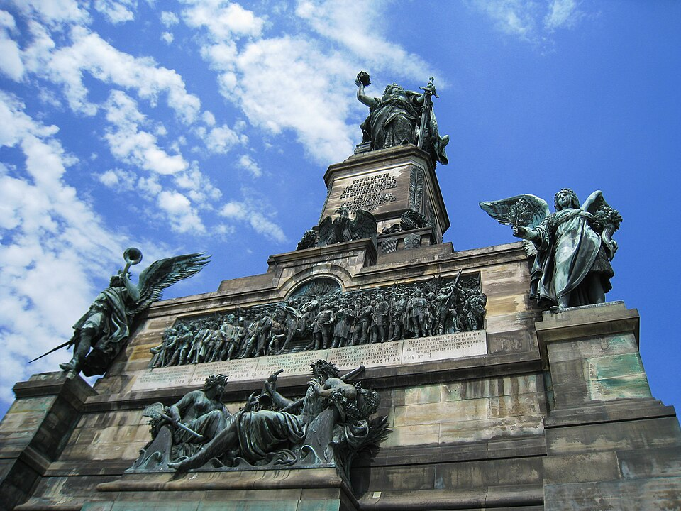
画像を拡大 ＋《ニーダーヴァルト記念碑》
- 作者
- ヨハネス・シリング（彫刻）、カール・ヴァイスバッハ（建築）
- 制作時期
- 1883年完成
- 所在地・所蔵
- リューデスハイム・アム・ライン、ドイツ
- 素材・形式
- 彫刻・記念碑
出典・画像について

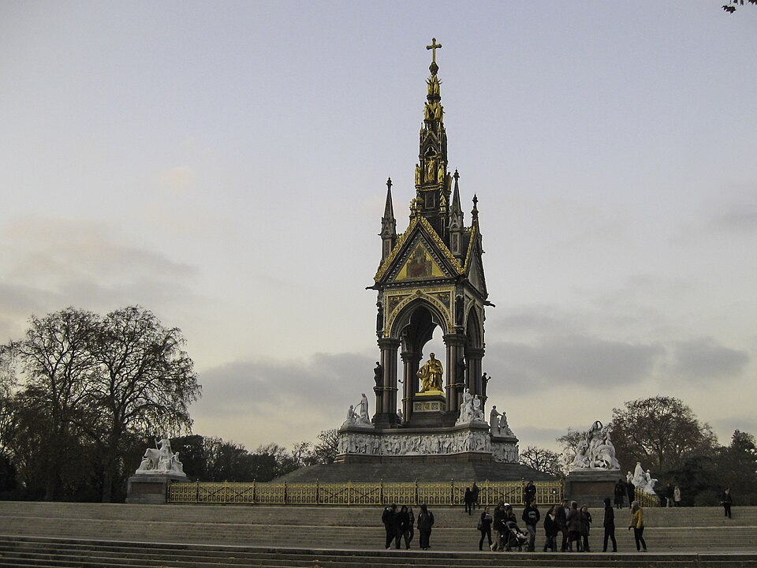
画像を拡大 ＋《アルバート記念碑》
- 作者
- ジョージ・ギルバート・スコット（設計）
- 制作時期
- 1863～1872年（記念碑）、1876年（像設置）
- 所在地・所蔵
- ケンジントン・ガーデンズ、ロンドン
- 素材・形式
- 彫刻・記念碑
出典・画像について

《世界を照らす自由（自由の女神像）》
- 作者
- フレデリック＝オーギュスト・バルトルディ
- 制作時期
- 1886年
- 所在地・所蔵
- リバティ島、ニューヨーク
- 素材・形式
- 彫刻・記念碑
理想化された英雄像という共通点
動画 3:44～有名な作品が生まれた一方、表現の基本は大きく変わりませんでした。19世紀初頭の新古典主義では、皇帝ナポレオンを称え、理想化された英雄的な姿を表します。その後、君主のいない国民国家の時代には、国の擬人像や過去の偉人を顕彰する像が現れました。しかし、国や偉人を称えるための理想的な人物像という点は共通していたのです。

《平和をもたらすマルスとしてのナポレオン》
- 作者
- アントニオ・カノーヴァ
- 制作時期
- 1806年完成
- 所在地・所蔵
- アプスリー・ハウス、ロンドン
- 素材・形式
- 彫刻・記念碑
出典・画像について
動画の1808年表示と異なり、掲載個体は公式解説の1806年完成を記載。
画像出典：Jörg Bittner Unna（写真・画像提供）／アントニオ・カノーヴァ（作品）
CC BY-SA 3.0
作品情報：作品・画像・利用条件
費用のかかる彫刻は、財源を持つ国家などの注文に頼らざるを得ません。注文主は自国の象徴を求めるため、依頼も理想的で英雄的なものになります。絵画におけるアカデミーの支配とは別の事情で、彫刻家の表現の自由は制限されていました。
カルポーと新しい表現
カルポーと人間の苦悩
動画 4:48～その中で新しい表現の先駆けとなったのが、フランスのジャン＝バティスト・カルポーです。《1792年の義勇軍の出発》を制作したフランソワ・リュードの弟子にあたり、ロマン主義に分類されます。ナポレオン三世の自由帝政期の代表作が《ウゴリーノと息子たち》です。
《ウゴリーノと息子たち》の主題
動画 5:18～ウゴリーノは実在したイタリアの貴族で、ダンテの『神曲』にも登場します。国内の諸州が対立する中、1288年に反乱の罪で投獄され、若い息子たちも同じ牢へ入れられました。鍵は海へ捨てられ、飢えて死を待つしかありません。自分たちの肉を食べて生き延びてほしいと願う息子たちと、その申し出に抵抗して苦悶する父が表されています。

《ウゴリーノと息子たち》
- 作者
- ジャン＝バティスト・カルポー
- 制作時期
- 1865～1867年
- 所在地・所蔵
- メトロポリタン美術館（67.250）
- 素材・形式
- 彫刻・記念碑
出典・画像について
メトロポリタン美術館の大理石群像。
画像出典：The Metropolitan Museum of Art（写真・画像提供）／ジャン＝バティスト・カルポー（作品）
CC0
作品情報：作品・画像・利用条件
制作メモ
足のみの候補は使わず全像を掲載。
苦悩と理想的な肉体の併存
動画 5:57～一方、その筋肉質の肉体は、飢えた人の姿とは思えません。古代ヘレニズム期の《ラオコーン》に着想を得ており、カルポーは、人間の苦悩と力強い肉体の表現に強い関心を持っていたと思われます。理想的な肉体美という伝統を残しつつ、英雄像とは異なる人間の苦悩を表す点に、新しさがありました。
 画像を拡大 ＋
画像を拡大 ＋
《ラオコーンとその息子たち》
- 作者
- ハゲサンドロス、アテノドロス、ポリュドロス
- 制作時期
- 紀元前1世紀頃（年代に異説あり）
- 所在地・所蔵
- ヴァティカン美術館、ピオ・クレメンティーノ美術館
- 素材・形式
- 彫刻・記念碑
カルポーの作品は人気を博しました。別の作品にはロココ美術を思わせる生き生きした表現も見られます。伝統を完全に離れたわけではありませんが、新しい表現を示していたのです。19世紀末には、そこから彫刻界へ革命を起こす巨匠、オーギュスト・ロダンが登場します。

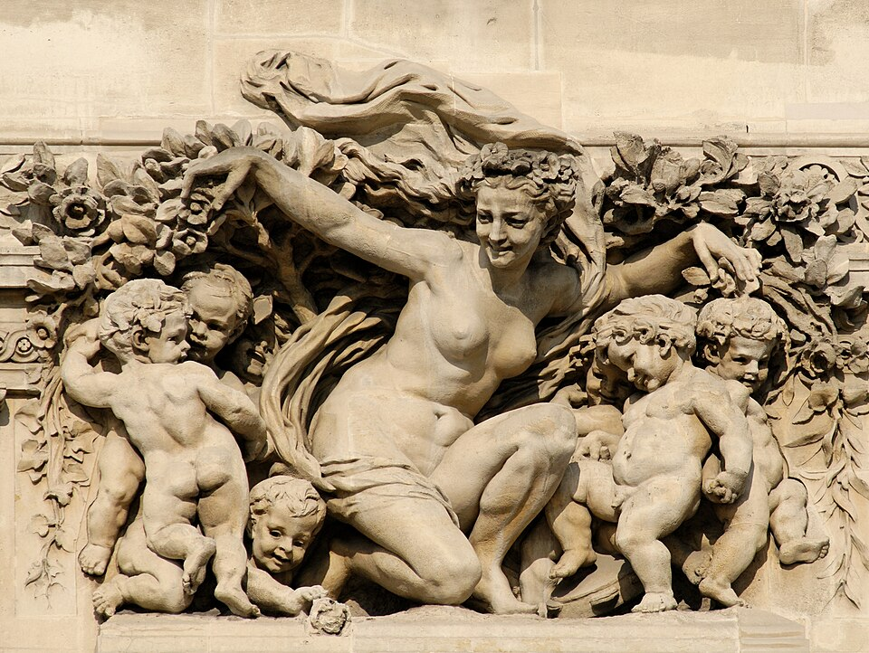
画像を拡大 ＋《フローラの勝利》
- 作者
- ジャン＝バティスト・カルポー
- 制作時期
- 1866年
- 所在地・所蔵
- ルーヴル宮フロール館南側ファサード、パリ
- 素材・形式
- 彫刻・記念碑
出典・画像について
ロダン
イタリアで得た着想
動画 6:50～ロダンはエコール・デ・ボザールの教育を受けず、ほぼ独学で彫刻を学びました。彫刻家カリエ＝ベルーズのもと、ベルギーで働いた後、独立と修業を目指してイタリアを旅します。ミケランジェロやドナテッロの彫刻に出会い、とりわけミケランジェロの生き生きした作品に感銘を受けました。
常識を覆したミケランジェロ
動画 7:12～ミケランジェロの《ダヴィデ》は、それまでの、ゴリアテの頭を踏む姿とは異なり、石を投げる前の場面を選びました。ルネサンスの三大巨匠の一人として、常識にとらわれず革新的な作品を生んだその姿勢が、ロダンの独自の制作へつながります。
 画像を拡大 ＋
画像を拡大 ＋
《ダヴィデ》
- 作者
- ミケランジェロ・ブオナローティ
- 制作時期
- 1501～1504年
- 所在地・所蔵
- アカデミア美術館、フィレンツェ
- 素材・形式
- 彫刻・記念碑
出典・画像について
《青銅時代》をめぐる疑惑
動画 7:33～イタリア旅行後に制作した《青銅時代》は、1877年の発表後に大きな賛否を呼びました。あまりに現実に近いため、生身の人間から直接型を取ったのではないかと疑われたのです。カルポーの作品も写実的ですが、こちらは過剰に筋肉を強調せず、現実にいそうな体格を示します。理想的な肉体ではなく、現実的な人物像である点が違いました。

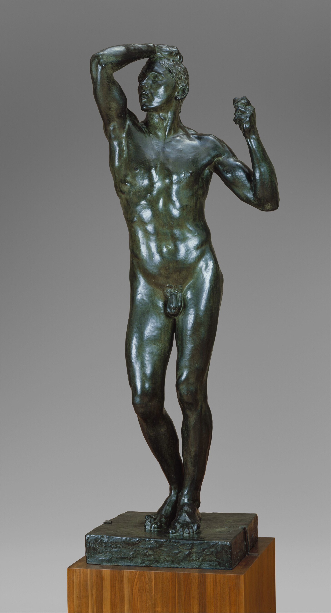
画像を拡大 ＋《青銅時代》
- 作者
- オーギュスト・ロダン
- 制作時期
- 1877年（構想）
- 所在地・所蔵
- 動画の鋳造個体の所蔵未確定
- 素材・形式
- 彫刻・記念碑
出典・画像について
《青銅時代》の鋳造作例のうち、メトロポリタン美術館所蔵品の写真。
画像出典：Auguste Rodin / The Metropolitan Museum of Art / Wikimedia Commons
CC0
作品情報：画像出典・利用条件
制作メモ
動画458秒の展示個体とは別の鋳造（同じ原型）。
勝利ではなく敗者を主題にする
動画 8:28～主題も前衛的でした。当初の題名は《敗者》で、1871年にフランスがドイツへ敗れた普仏戦争の敗戦を表そうとしたといいます。偉大な勝利や偉人ではなく、敗者の美学を示す試みです。その新しさや、なぜ手を頭へ置くのかという不可解さも非難されました。
スキャンダルに落胆し、同時に激怒したロダンは、生身の人間から型を取ったという疑いに向き合いました。1880年頃には非難は称賛へ変わり、新たな時代を告げる作品を次々と生むようになりました。
型取り疑惑の説明について
動画では「《青銅時代》と同じ作品を少し大きく制作したことで疑いを払拭した」と説明します。ロダン美術館の作品解説は、輪郭の綿密な研究による造形であることを示したと述べ、同作の拡大制作とは説明していません。本文では解決方法を断定せず、当初の説明をここに記録します。
確認資料：ロダン美術館《青銅時代》
ロダンが表す絶望
動画 9:17～ロダンも《ウゴリーノと息子たち》を制作しました。痩せこけたウゴリーノと、力なく横たわる息子たちの姿には、カルポーの作品との明らかな違いが見られます。『神曲』のウゴリーノと子どもたちの死肉という主題を通じ、食べる前、あるいは食べている最中を思わせる絶望や異常さを表しています。絵画の象徴主義にも通じる表現といえるでしょう。

《ウゴリーノと息子たち》
- 作者
- オーギュスト・ロダン
- 制作時期
- 1882～1906年（掲載個体、動画表示1881年）
- 所在地・所蔵
- オルセー美術館、パリ（ロダン美術館から寄託）
- 素材・形式
- 彫刻・記念碑
出典・画像について
掲載個体は組み合わせた石膏群像（DO1986 1/S160）。大理石ではありません。動画表示1881年と掲載個体の1882～1906年を区別。
画像出典：Yair Haklai（写真・画像提供）／オーギュスト・ロダン（作品）
CC BY-SA 3.0
作品情報：作品・画像・利用条件
ウゴリーノの物語の留保
動画は「子どもたちの死肉を食べた罪で地獄に落ちた」と説明しますが、ロダン美術館の仏語解説では、地獄で罰せられる罪は裏切りとされ、一家は餓死し、父は飢えに屈しかける姿と説明されます。オルセー美術館は人肉食の解釈を採用しています。人肉食が確定した事実であり、それが地獄の罪の理由だったとは本文で断定しません。
確認資料：ロダン美術館・地獄の門 · オルセー美術館《ウゴリーノ》
《カレーの市民》と新しい英雄像
動画 9:54～ロダンは十年足らずで伝統的な慣習を打ち破りました。その急進性は、社会を変革しようという意図がなくても議論を呼びます。《カレーの市民》もその一つです。フランスの都市カレーは、ドーヴァー海峡の北海への出口に位置します。中世の百年戦争で、フランスとカレーを救うため、六人の市民が進んでイギリス王の捕虜となりました。市は彼らを称える記念像をロダンへ依頼しました。
市が望んだのは、堂々とした超越的な英雄の姿でした。しかしロダンは、怯え、迷い、絶望する人間を表しました。自ら身を捧げる勇ましい英雄像ではなく、国のために迷い悩みながら進む人々の生々しい感情を描いたのです。勝手に制作したわけではなく、関係者の了解を得ながら、新しい時代の記念碑を模索しました。当時は非難もありましたが、現在では代表的な傑作に数えられています。

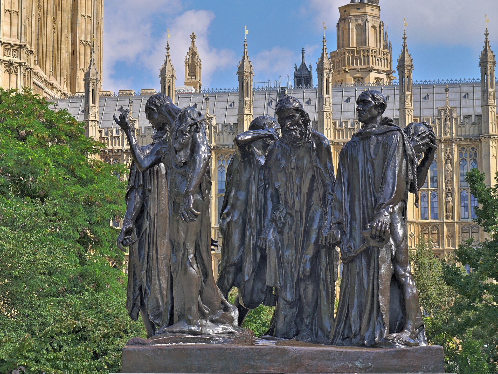
画像を拡大 ＋《カレーの市民》
- 作者
- オーギュスト・ロダン
- 制作時期
- 1884～1889年（構想・制作）
- 所在地・所蔵
- 動画の完成群像の鋳造個体・所在地未確定
- 素材・形式
- 彫刻・記念碑
出典・画像について
《カレーの市民》の完成群像の鋳造作例のうち、ロンドンのヴィクトリア・タワー・ガーデンズに設置されたもの。
画像出典：Patche99z / Wikimedia Commons
CC BY-SA 3.0
作品情報：画像出典・利用条件
制作メモ
動画611秒の個体と同一とは確認していない（同じ原型の別鋳造の可能性）。
生涯をかけた《地獄の門》
動画 11:25～ロダンが生涯をかけて制作したのが《地獄の門》です。1880年、新設予定のパリの装飾美術館のため、政府から入口の門扉を依頼されました。ロダンは、愛読するダンテ『神曲』の地獄篇の情景を表すことに決めます。《ウゴリーノと息子たち》も、そこに含まれる主題の一つです。

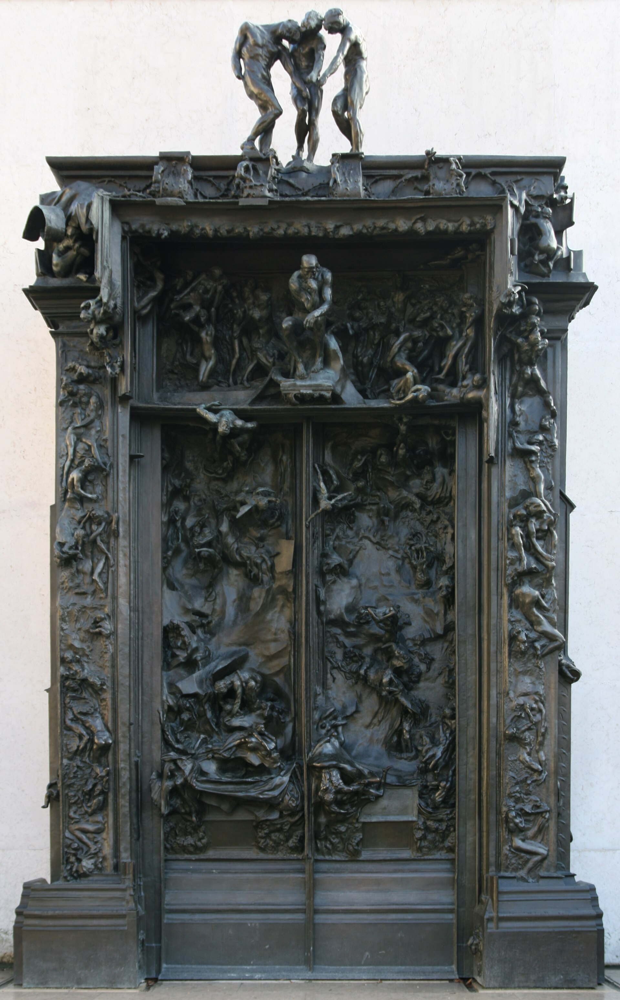
画像を拡大 ＋《地獄の門》
- 作者
- オーギュスト・ロダン
- 制作時期
- 1880年着手、未完成（映像の鋳造個体・年は未確定）
- 所在地・所蔵
- 未確定
- 素材・形式
- 彫刻・記念碑
出典・画像について
《地獄の門》のロダン美術館（パリ）の鋳造作例の写真。
画像出典：Till Niermann / Wikimedia Commons
CC BY-SA 3.0
作品情報：画像出典・利用条件
制作メモ
動画691秒の画面の個体とは別の可能性がある（同じ原型の鋳造）。
《考える人》は誰なのか
動画 11:47～門の上に座る《考える人》は、当初《詩人》と呼ばれました。『神曲』の作者ダンテを表すとも、ロダン自身を表すともいわれます。その男性像を独立させたのが、よく知られる《考える人》です。誰であり、地獄を見て何を思うのか、詳細は謎めいています。伝統的な知識があれば理解できる表現とは異なり、彫刻の常識を変えました。急進的な姿勢は批判も受けましたが、人間味のある作品群は、後の彫刻家へ大きな影響を与えます。

《考える人（大型モデル）》
- 作者
- オーギュスト・ロダン
- 制作時期
- 大型モデル1903年、掲載個体の鋳造1904年
- 所在地・所蔵
- ロダン美術館、パリ（S.1295）
- 素材・形式
- 彫刻・記念碑
出典・画像について
ロダンの後の彫刻家
ブールデルの力強い肉体
動画 12:36～ロダンと並ぶ近代彫刻の巨匠が、アントワーヌ・ブールデルとアリスティド・マイヨールです。ブールデルはロダンの助手を十五年間務め、後継者として制作しました。名を不朽のものとしたのは、1909年の《弓をひくヘラクレス》です。アカデミスムの艶やかに仕上げた肉体とは違い、ごつごつとした、力強くたくましい肉体を表します。ロダンの悲壮な主題を離れ、人間の内から湧くエネルギーと、今にも動き出すような迫力を示しました。

《弓をひくヘラクレス》
- 作者
- エミール＝アントワーヌ・ブールデル
- 制作時期
- 1909年
- 所在地・所蔵
- メトロポリタン美術館（24.232）
- 素材・形式
- 彫刻・記念碑
出典・画像について
金めっき青銅、Alexis Rudier鋳造のMet所蔵個体。
画像出典：Wmpearl（写真・画像提供）／エミール＝アントワーヌ・ブールデル（作品）
Public domain（PD-self）
作品情報：作品・画像・利用条件
マイヨールの《地中海》
動画 13:12～ブールデルに学び、独自の彫刻を生んだのがマイヨールです。もとはアカデミー・ジュリアンで、ナビ派のモーリス・ドニらと学び、1900年頃までは絵画を制作しました。四十歳頃に彫刻家として登場すると、その才能を開花させます。代表作《地中海》では、抽象的な主題を、休息する豊満な女性像で表しました。地中海の穏やかな気候と豊かな自然を、人体に託しているのです。

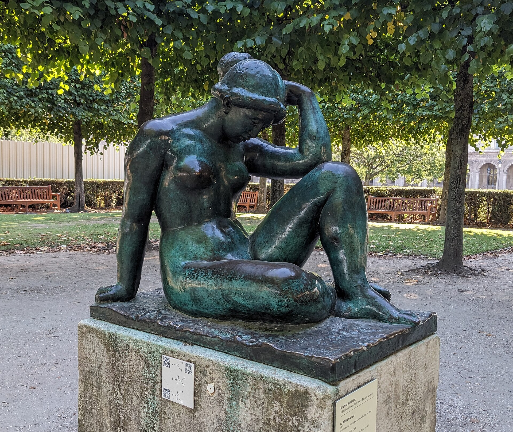
画像を拡大 ＋《地中海》
- 作者
- アリスティド・マイヨール
- 制作時期
- 1905年（作品成立、映像の鋳造個体・年は未確定）
- 所在地・所蔵
- 未確定
- 素材・形式
- 彫刻・記念碑
出典・画像について
マイヨール《地中海》のブロンズ鋳造作例のうち、パリのテュイルリー庭園に設置されたもの。
画像出典：Shonagon / Wikimedia Commons
CC0
作品情報：画像出典・利用条件
制作メモ
動画811秒の個体（白タイル建物の前）とは別の鋳造。
ほかにも抽象的な概念を女性像で表す様式を確立しました。そこには、自然をそのまま模倣してはならないというナビ派の制作姿勢や、自然から抽象を引き出すよう説くゴーギャンの教えが影響していると思われます。
クリンガーの彩色彫刻
動画 14:02～画家として活動しながら彫刻を手掛ける芸術家も現れました。象徴主義のマックス・クリンガーによる《ベートーヴェン像》は、伝統的な彫刻にもある荘厳で艶やかな肉体を持ちます。一方、ロダンには見られなかった色彩を彫刻に施している点で、一線を画しています。

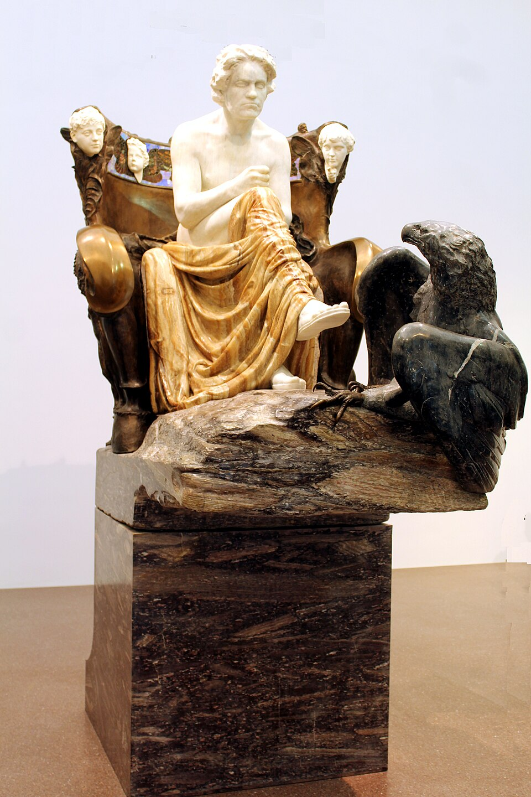
画像を拡大 ＋《ベートーヴェン》
- 作者
- マックス・クリンガー
- 制作時期
- 1902年
- 所在地・所蔵
- ライプツィヒ造形美術館（P28）
- 素材・形式
- 彫刻・記念碑
出典・画像について
多素材の原作品を撮影した写真。
画像出典：Dguendel（写真・画像提供）／マックス・クリンガー（作品）
CC BY 4.0
作品情報：作品・画像・利用条件
制作メモ
写真のCC BY4.0と彫刻原作の権利を区別。
20世紀の自己表現へ
動画 14:26～ロダンの切り開いた新時代には、その圧倒的な存在へ反発する形でもさまざまな様式が生まれました。彫刻家だけでなく、作品を注文する人や社会の見方が変わったことも関係するのでしょう。伝統への反発と、それを乗り越えたロダンへの反発を経て、20世紀の彫刻は新たな自己表現と前衛の場として、めまぐるしく変化していきます。
要点まとめ
- 19世紀の彫刻は絵画に比べて変化が緩やかだった。大理石や青銅が高価で、ブルジョワ層の収集も絵画や家具が中心だったため、注文は主に公的な事業からもたらされた。
- ナポレオン以後の愛国主義のもとで記念碑が多く作られた。リュードの《1792年の義勇軍の出発（ラ・マルセイエーズ）》、ニーダーヴァルト記念碑、アルバート記念碑、《世界を照らす自由（自由の女神像）》など。国や偉人を称える理想的な人物像が共通していた。
- ロマン主義のカルポーは、『神曲』に登場する実在の貴族を主題に《ウゴリーノと息子たち》を制作した。《ラオコーン》に着想を得た力強い肉体で、英雄像とは異なる人間の苦悩を表した。
- オーギュスト・ロダンはほぼ独学で彫刻を学び、イタリアでミケランジェロに感銘を受けた。1877年の《青銅時代》は現実に近すぎて生身の人間から型を取ったと疑われた。当初の題名は《敗者》で、普仏戦争の敗戦を表そうとしたという。
- ロダンの《ウゴリーノと息子たち》は痩せこけた姿で絶望を表した。《カレーの市民》では、百年戦争で身を捧げた六人の市民を、怯え迷う人間として表した。
- ロダンが生涯をかけた《地獄の門》は、ダンテ『神曲』地獄篇の情景を表す。門の上の男性像を独立させたのが《考える人》で、当初は《詩人》と呼ばれた。
- ロダンの助手ブールデルは《弓をひくヘラクレス》で力強い肉体を、ナビ派と学んだマイヨールは《地中海》で抽象的な主題を女性像で表した。象徴主義のクリンガーは《ベートーヴェン像》に色彩を施した。
- 伝統と、それを乗り越えたロダンへの反発を経て、20世紀の彫刻は自己表現と前衛の場として変化していった。
確認問題
答えを考えてから開いてください。選択問題は選ぶとすぐ正誤と解説が出ます（選択肢の順番は開くたびに変わります）。各問題のリンクから該当の章や作品カードへ戻れます。
選択問題：0／5問回答・正解0
A. 一問一答答えを考えてから開く
問1あまりに現実に近いため、生身の人間から直接型を取ったのではないかと疑われた、1877年発表のロダンの作品は何か。
答えを見る
問2新設予定のパリの装飾美術館の門扉として政府から依頼され、ロダンがダンテ『神曲』地獄篇の情景を表した、生涯をかけた作品は何か。
答えを見る
問3地中海の穏やかな気候と豊かな自然を、休息する豊満な女性像で表したマイヨールの代表作は何か。
答えを見る
B. 4択選ぶとすぐ正誤と解説
問419世紀に、絵画に比べて彫刻の変化が緩やかだった理由として正しいものはどれか。
→ 本文で確認（彫刻の変化が緩やかだった理由）
問5ロダンの《カレーの市民》で表された六人の市民の姿として正しいものはどれか。
→ 本文で確認（《カレーの市民》と新しい英雄像）
問6ロダンの助手を十五年間務め、《弓をひくヘラクレス》で名を不朽のものとした彫刻家は誰か。
→ 本文で確認（ブールデルの力強い肉体）
C. 図版問題画像を見て答える
問7この作品の名前と作者を答えよ。当初は何と呼ばれていたか。
答えを見る
問8この《ウゴリーノと息子たち》の作者は誰か。
→ 作品カードで確認
問9この作品の名前はどれか。
→ 作品カードで確認